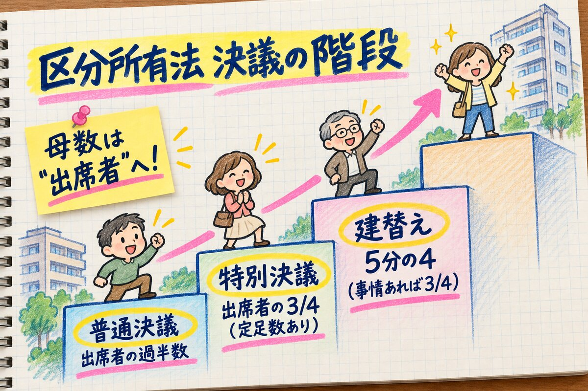
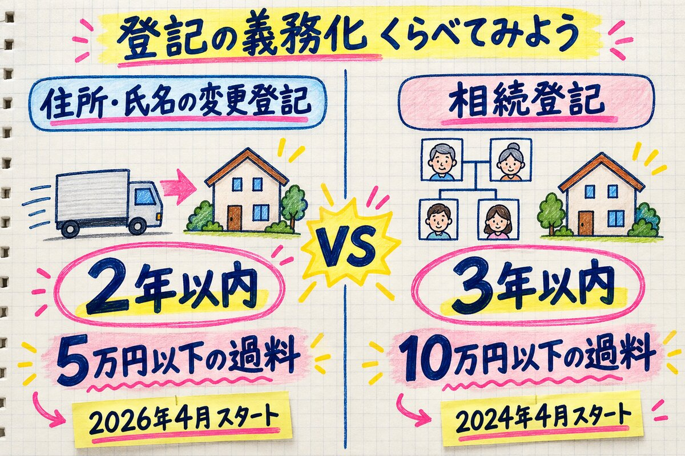
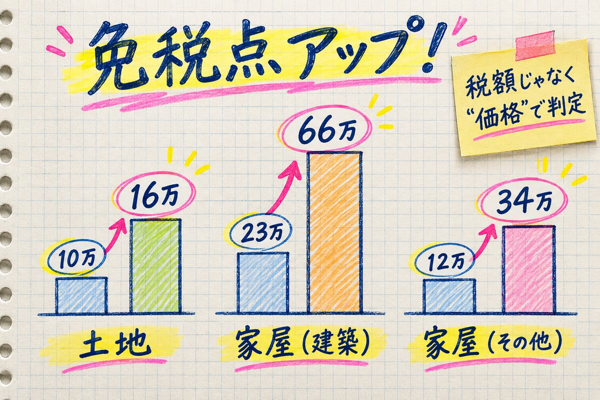
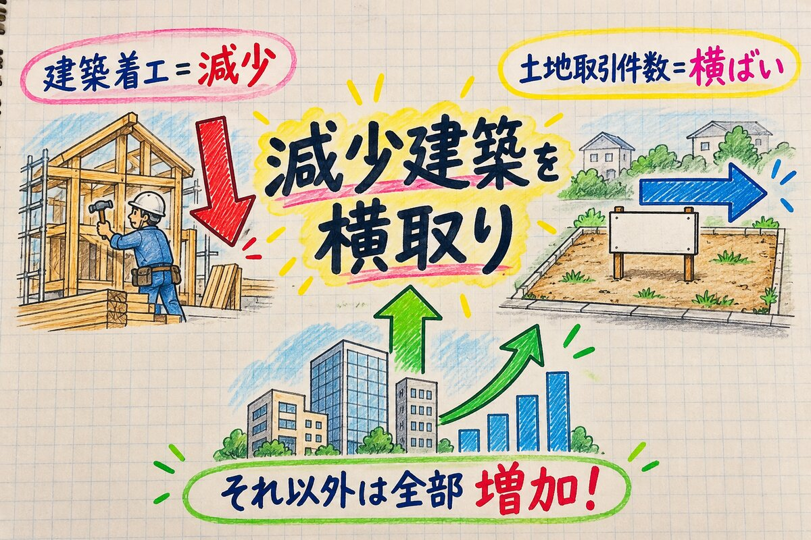

| 決議の種類 | 改正後の要件 | ここを覚える |
|---|---|---|
| 普通決議 | 出席者の過半数 | 欠席者は母数に入らない（委任状・議決権行使書は出席扱い） |
| 特別決議 | 定足数（各過半数の出席）＋出席者の各3/4 | 共用部分の重大変更／規約の設定・変更・廃止 |
| 重大変更の緩和 | 出席者の各2/3 | 瑕疵による危険除去・バリアフリー化が目的のとき |
| 大規模滅失の復旧 | 定足数＋出席者の各2/3 | 建物価格の1/2超が滅失したとき |
| 建替え決議 | 全体の各4/5 （客観的事情あり→3/4） | 出席者基準ではない！ 事情＝耐震・防火不足、外壁剥落、配管腐食、バリアフリー不適合 |
| マンション再生決議 （新設） | 原則 各4/5／事情あり3/4 政令指定災害の被災2/3 | 建物更新・一括売却・敷地売却・取壊しを多数決で選べる |

| 変更登記 | 相続登記 | |
|---|---|---|
| 期限 | 2年 | 3年 |
| 過料 | 5万円以下 | 10万円以下 |
| 施行 | 2026.4.1 | 2024.4.1 |

| 不動産取得税 免税点 | 改正後 |
|---|---|
| 土地 | 10万 → 16万円未満 |
| 家屋（建築） | 23万 → 66万円未満 |
| 家屋（その他） | 12万 → 34万円未満 |
| 新築住宅の床面積 | 改正前 | 改正後 |
|---|---|---|
| 不動産取得税の特例 | 原則50〜240㎡ 戸建て以外の貸家は40㎡〜 | 種類を問わず40〜240㎡ ※東京23区の一部の地域は下限50㎡のまま |
| 固定資産税1/2減額 | 原則50〜280㎡ 戸建て以外の貸家は40〜280㎡ | 40〜240㎡（120㎡分まで） 一般3年度／3階建て以上の中高層耐火5年度 |
法令上の制限 ★1：森林法・森林経営管理法・港湾法の改正で、35条重説の対象条文が変更（整理のみ）

| 統計 | 数字 | 傾向 |
|---|---|---|
| 法人企業統計 （令和6年度） |
売上高 約58.2兆円（+4.2%） 営業利益 約7.1兆円（+12.9%）／経常利益 約7.9兆円（+8.7%） 売上高経常利益率 13.6% |
増加 2年連続 利益率は5年連続↑ |
| 建築着工統計 （令和7年） |
新設住宅 74万戸（−6.5%） 持家20.1万（−7.7%）・貸家32.4万（−5.0%）・分譲20.8万（−7.6%） |
減少 3年連続 持家だけ4年連続 |
| 地価公示 （令和8年3月） |
全国・三大都市圏・地方圏 × 全用途・住宅地・商業地 | すべて上昇 5年連続 |
| 宅建業者数 （令和7年3月末） |
13万2,291業者 | 増加 11年連続 |
| 土地取引件数 （令和7年） |
約130万件（売買による所有権移転登記） | ほぼ横ばい |
| 宅地面積 （令和5年） |
住宅地・工業用地等 約199万ha |